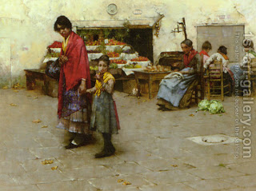

Bava Batra 90 - Market Distorters

Those who hoard produce, who lend on interest, who reduce the size of their measures, and who distort the markets, concerning them it says, "... you who swallow up the needy and cause the poor of the land to fail...God has sworn... I will never forget any of their deeds ."
Hoarders are market manipulators who engineer price increases in food staples by hoarding large stores of food, then selling at these higher prices. Lending on money on interest by one Jew to another is prohibited . Reducing the size of the measure means cheating the buyer. Market manipulators are those who cause staple food prices to rise artificially. The prohibition does not apply to specialty food items, such as spices.